WPE's logo, its five colours, its typefaces and its pattern did not come from an agency. They came out of a project run by early career researchers inside the group, working to a brief the group set itself. The guideline that resulted still governs how WPE looks — including the page you are reading. Here is what was made, and why it looks the way it does.
The brief
WPE sits inside the School of Civil Engineering alongside a number of other research groups, and its work spans sanitation, pollution, circular economy, net-zero buildings, indoor air quality and climate change. The problem was recognition: a group that broad is easy to mistake for several unrelated ones. The brief, as the finished guideline records it, was this:
"The group has asked for a cohesive visual identity to be created for them so that they can set themselves apart from other university research groups. Their new look is designed to enhance their visibility and recognition within the School of Civil Engineering and across the university, whilst staying true to their values as a collective. The logo is centred around feedback and connection in a professional manner."
— WPE Brand GuidelineTwo audiences had to be served at the same time, and they do not want the same thing:
- Academic professionals — researchers, lecturers and professors, reached through a clean, monoline design that reads as professional and sophisticated.
- Students and early-career prospects — reached through bright colour and cooperative messaging.
The guideline fixes the group's personality on five scales: serious to playful, niche to generic, casual to formal, cooperative to independent, and friendly to authoritative. The result it aims at is a brand that understands the seriousness of the work but is still friendly, collaborative and distinct.
The team
Five doctoral researchers from across the group worked on the project:
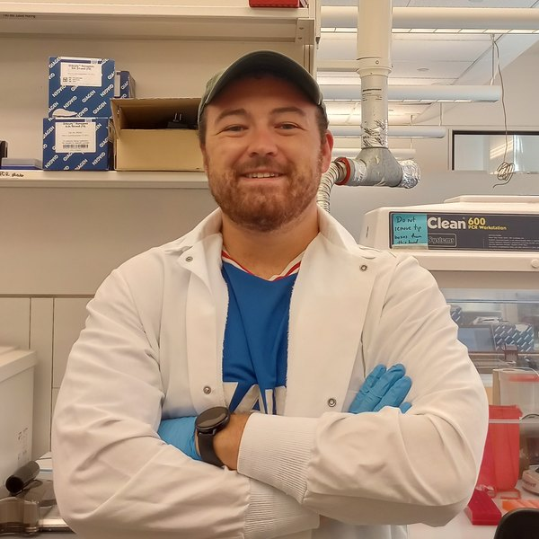
Jack Dalton
Indoor Air
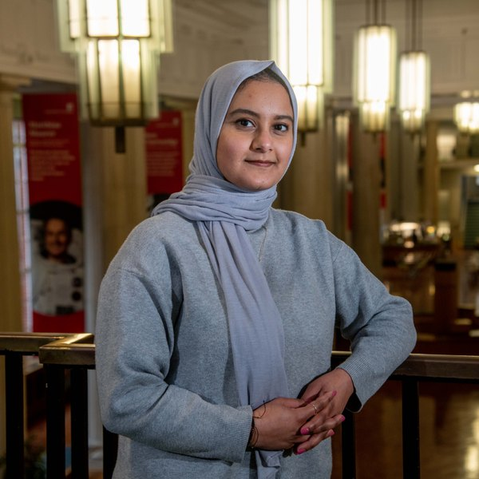
Bushra Hasan
Indoor Air
Jemma Phillips
Sanitation & WASH
Xiaoxuan Qin
Indoor Air
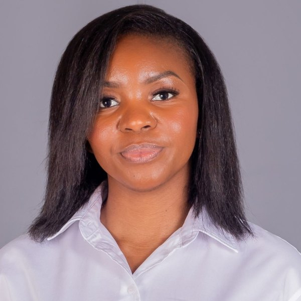
Gettie Shiinda
Sanitation & WASH
Prof Catherine Noakes acted as the faculty liaison. Anushi Khandare (that's me) documented the process, which is how this post came to exist.
The logo
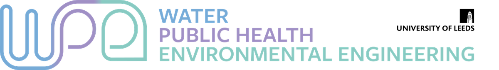
The mark is a lettermark monogram. W, P and E are all present, connected in a fluid but structured way to stand for the feedback and cooperation inside the group. The monoline style — one weight, one continuous stroke — was chosen to represent the directness the group brings to large problems, with sharp right angles set against otherwise strictly parallel curves. The three colours in the gradient are not decoration: there is one for each word the initials stand for.
Four variants were drawn so the mark survives contact with real documents, each supplied in black, colour, colour negative and white negative, and in PDF, SVG and two PNG resolutions:
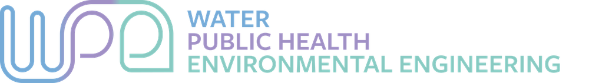
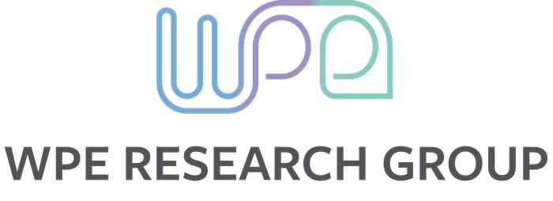
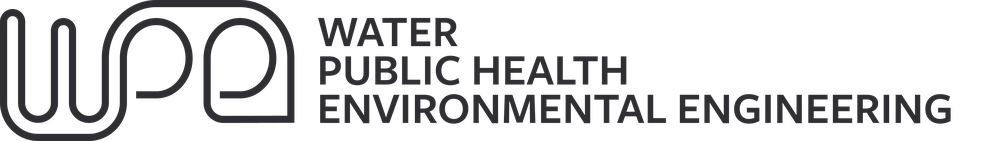
The guideline is equally clear about what not to do: do not distort or stretch the mark, do not add shadows, and do not place it on a busy background. Keep the proportions, and use the brand colours.
Colour
Five colours, each with a name rather than a number, so that people talk about them consistently:
- Summer Blue
#77AAD4 - Orbit
#6F8AC6 - Wisteria
#9F90C5 - Riverbed
#8AC9C1 - Earth Stone
#53525a
All five are in this page right now. They are the first five custom properties in css/style.css: the four tints carry headings, links and the research-theme accents, and Earth Stone sets the body text.
Type
Three typefaces, each with a job:
- Heading — FreightSans Pro Bold
- Display — Monarcha Regular
- Body — Nunito Regular
There is a practical catch worth recording. FreightSans Pro and Monarcha are licensed fonts, available through an Adobe licence or bought outright; Nunito is open. That is why printed and presented material can use all three, while the website sets almost everything in Nunito and falls back gracefully where the other two are not installed.
The pattern
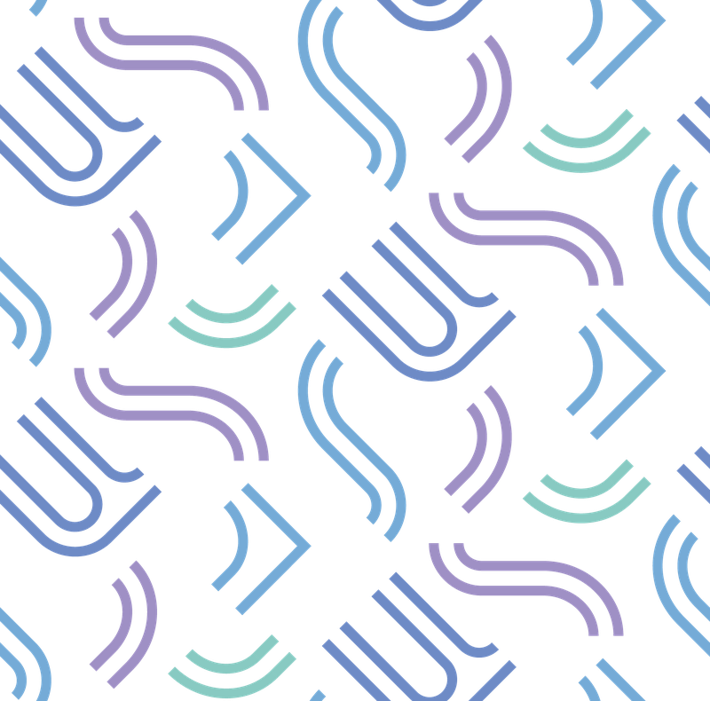
The pattern takes fragments of the logo — the loops, the right angles, the open counters — and tiles them seamlessly. It comes in colour and in monotone, and the choice between them is the main lever anyone has for setting the tone of a poster, a slide or a banner without redesigning anything.
Seeing it on something
A logo in isolation tells you very little. The guideline closes with mock-ups, which is where the system is actually tested:
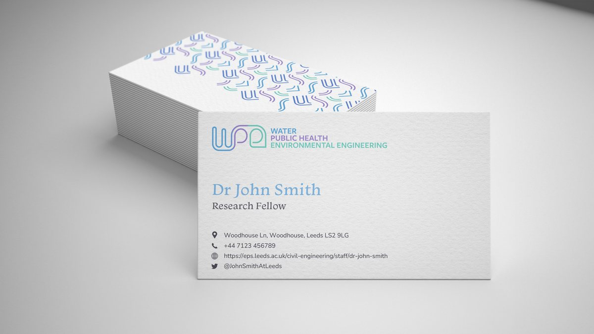
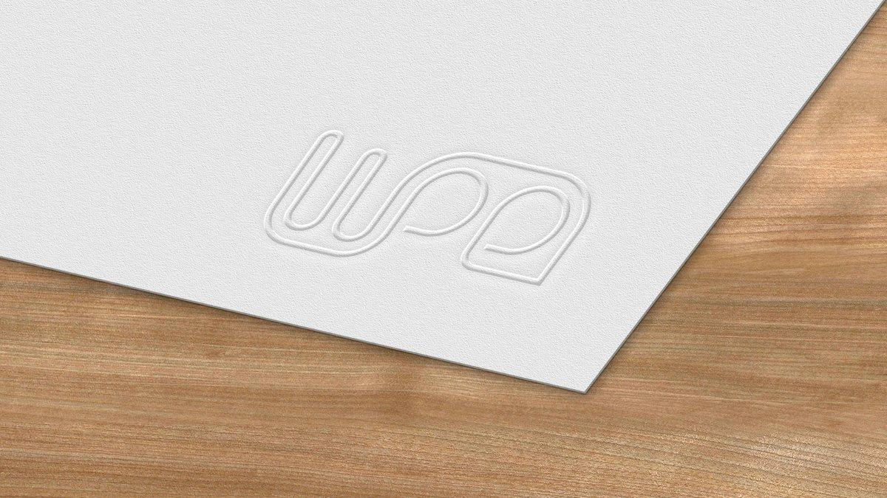
Alongside these, the project delivered two email banner templates and a PowerPoint template, all built from the same pattern and logo files, so that a colleague making a slide deck does not have to make any design decisions at all.
What the ECRs got out of it
Beyond the identity itself, the project was professional development of a kind that a PhD does not usually supply:
- Project management — coordinating work across several stakeholders with no line authority over any of them
- Client communication — presenting and defending design decisions to an audience of academics
- Interdisciplinary collaboration — working across four research specialisms
- Design thinking — and the discipline of writing down rules that other people will have to follow
Those skills travel. Data visualisation, conference posters and presentation design all draw on the same judgement about hierarchy, contrast and restraint.
Where it is now
The identity is in everyday use. The logo is in the header of this site and on the group's slides and banners; the five colours and three typefaces are the variables at the top of the site's stylesheet. The full set — guideline, four logo variants in four colourways and four file formats, the two patterns, and the Office templates — is held by the group and available to anyone in WPE who needs it. If you are making something WPE-branded, ask rather than improvise.

About the Author
Anushi Khandare is a PhD researcher and Cake Meetings Lead for the WPE group. She documented the ECR branding project.